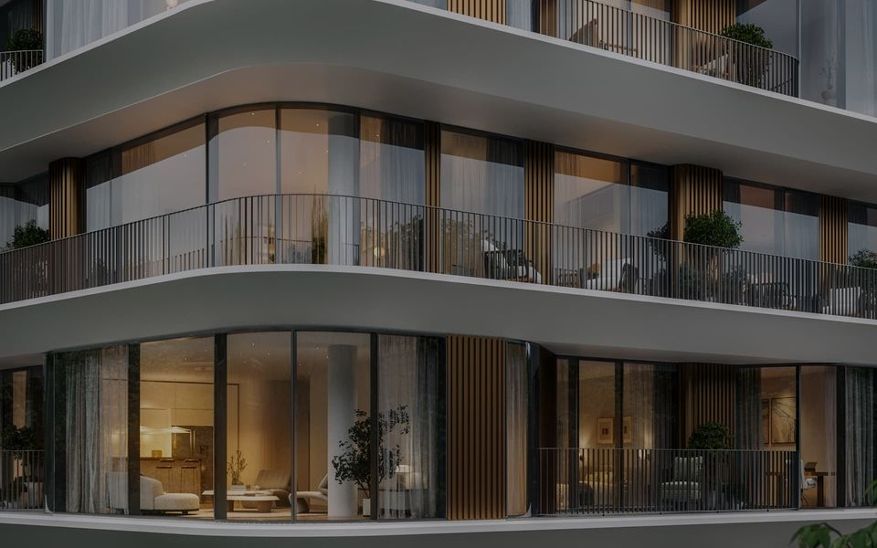

Дома / Phantom
Премиум · Мещанский район
Phantom Sense Development
район метро Сухаревская · старт продаж, срок — III кв. 2027 · продаёт застройщик

На заметку:
Три корпуса бюро DROO у Малой Сухаревской площади, 105 квартир, ключи — в III квартале 2027 года. У Sense на ЦИАН 51 лот, медиана 2,48 млн за метр — дороже сданного Форума через площадь. Итог паспорта — отметка с одним минусом: 1,27 машиноместа на квартиру.
Паспорт дома
Девять проверок,
закрыто 8 из 9
Паспорт собираем по открытым данным: проектная декларация, карты, рейтинг застройщика. «Проверяем» — значит, ответа с источником пока нет, и мы его не додумываем. «Нет» по проверке — это минус; сколько минусов выдерживает дом, зависит от класса. Красная линия — остановленные стройки у застройщика, продажа мимо эскроу или ТЭЦ, мусорный завод и полигон рядом: тогда отметки не будет.
| Проверка | Как у дома | Мерка класса | Ответ |
|---|---|---|---|
| 01Адрес и класс | район метро Сухаревская, Мещанский район23.09.2026 | премиум — внутри Третьего кольца | да |
| 02Окружение | ТЭЦ, промзон и крупных магистралей в 150 м нетOpenStreetMap (bbbike 22.09.2026 + Overpass): ТЭЦ, МСЗ, полигоны отходов, промзоны от 2 га, магистрали; парки от 1 га и вода — 500 м · 23.09.2026 | ТЭЦ, мусорный завод и полигон не ближе 150 м (иначе красная линия), промзона и магистраль тоже | да |
| 03Повседневность | школа с отметкой — 15 мин пешкомOpenStreetMap, пешеходный граф (Дейкстра, 4,5 км/ч): метро, МЦК, МЦД, ж/д; marshruty.csv, shkoly.csv · 23.09.2026 | метро, МЦК или МЦД до 15 минут пешком | да |
| 04Плотность | 105 квартиркаталоги, декларации, сайты застройщиков (база 23.09) · 23.09.2026 | не больше типичного дома класса — 665, на этаже до 5 | да |
| 05Машина | 133 мест на 105 квартир — 1,27каталоги, декларации, сайты застройщиков (база 23.09) · 23.09.2026 | от 1,5 места на квартиру | нет |
| 06Застройщиккрасная линия | Sense DevelopmentЕИСЖС наш.дом.рф: каталог новостроек, реестр застройщиков, реестр проблемных объектов · ЕФРСБ bankrot.fedresurs.ru | без остановленных строек и банкротств (иначе красная линия), рейтинг ЕРЗ.РФ от 3 из 5 | проверяем |
| 07Сроки дома | ввод: первая версия декларации не раскрыта ⟶ III кв. 2027 · готовность по графику декларации 0% · строится 2 из 2 корпусов (показан корпус с наибольшим сдвигом)https://наш.дом.рф/сервисы/каталог-новостроек/объект/65478 (+ ещё 1 объект: 59212) · 23.09.2026 | перенос срока не больше полугода | да |
| 08Юридикакрасная линия | квартиры · эскроу есть (Альфа-банк) · разрешение на строительство действует до 04.03.2028 · участок: собственность · не опубликовано: проект ДДУhttps://наш.дом.рф/сервисы/каталог-новостроек/объект/65478 (+ ещё 1 объект: 59212) · 23.09.2026 | продажа через эскроу, документы в порядке (иначе красная линия) | да |
| 09Цена против класса | от 1 600 000 ₽/м²каталоги, декларации, сайты застройщиков (база 23.09) · 23.09.2026 | не дороже медианы класса в районе больше чем на 30% | да |
Ещё восемь проверок — архитектура, квартиры, двор, воздух, содержание, соседи, что построят рядом и ликвидность — делаем, когда дом попадает в вашу подборку. Как устроены все 17 — в методе.
Школы рядом
Ближайшая школа — Школа-вуз «Современное образование», 5 мин пешком. Ближайшая из нашей базы школ — Школа № 1284, 6 мин. В 15 минутах — 5 школ из базы. С отметкой NOTA — Школа № 2107, 15 мин.
Пешком по улицам и дворам, 4,5 км/ч, до ближайшего корпуса школы. Все школы вокруг дома — на карте «До школы пешком», сильные школы города — в рейтинге школ.
Что в продаже
Квартиры
по комнатности
Самый доступный лот — 83,1 м² за 154 млн ₽.
| Тип | Площадь, м² | Цена, млн ₽ |
|---|---|---|
| 1 комната | 83,1–92,5 | 154–162 |
| 2 комнаты | 110–162,3 | 186–307 |
| 3 комнаты | 169–227,8 | 299–472 |
| 4+ комнаты | 225,2–250,1 | 390–518 |
| 4+ комнаты | от 279,6 | от 610 |
Источник: novostroev.ru · сверка 12.08.2026. Цены — со скидкой застройщика, если он её показывает. Лоты уходят каждую неделю: актуальный набор и планировки пришлём.
Что проверить на месте
Вопросы
для просмотра
- Какой корпус: восточный и два других различаются
- Шум Садового кольца — какие квартиры на него выходят
- Что в договоре на случай переноса срока
Источники
- kvadroom.ru
- novostroev.ru
- наш.дом.рф
- 24.09.2026;
- 24.09.2026
Данные базы NOTA на 23 сентября 2026. Если застройщик раскроет новые цифры, итог пересчитаем.